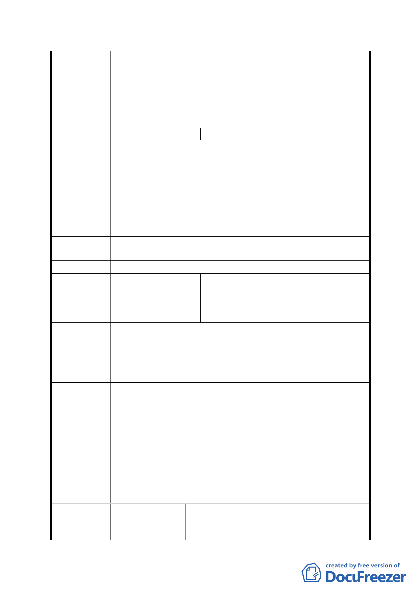

非位屬計畫區內，地勢相對較低，宜規劃為防洪調節池之
範疇，且絕大部分平均坡度大於 30％，故劃為保護區。
2.保護區非屬公共設施用地，無法由政府辦理徵收，故變更
後原屬私有部分仍維持私有，得依本市土地使用分區管制
自治條例保護區規定作相關使用。
委員會決議 同意依「市府修正後回應說明」辦理
編號
48 陳情人
謝豪、莊琇媛(101.12.26)
1、本市文山區公訓段二小段 10、11、24 等土地，於民國
58 年 4 月 28 日公告為國中用地〈取得方式為徵購或其他〉
陳情理由
詳如土地使用分區證明。
2、台北市政府為防洪調節池規劃，有意將原辛亥國、高中
用地內土地重新編定，竟考慮將其劃分為保護區、公園及道
路等。
建議辦法
但此計劃危害土地所有權人財產之權益甚鉅，應該考慮依照
原編定計畫全部徵收，再依市府計畫之規劃作為各項用途。
市府修正後
回應說明
同編號 47。
委員會決議 同意依「市府修正後回應說明」辦理
興昌里里長吳融昊、興光里里長洪正
編號
49 陳情人
平、興旺里里長蘇瓏議、興得里里長
黃細福、興泰里里長鍾譯樂、興業里
里長洪長榮
聯合聲明
主旨：敦請都審委員儘速通過萬美街（辛亥國中）防洪調節
陳情理由
池案
說明：該案審查四年多尚未通過，已造成地方上人民之財產
因淹水而造成損害。
該案盼儘速通過可解決以下困境：
1.興昌里門面，因該案現址鐵皮屋凌亂四十餘年未有絲毫改
變，已形成都市之瘤、城市之恥，透過該案審查通過，既
解決土地荒廢之舊害，亦增添公園綠地及活動中心，造福
建議辦法
鄰近數里里民。
2.該案儘速通過，解除鄰近興旺、興泰、興光、興得、興業
各里淹水之苦，因該案遲遲未過，致使今年 6 月 12、13
日大雨造成下游各里里民財物蒙受重大損失，故該案宜儘
速通過。
委員會決議 本案依市府本次會議所送資料修正後通過。
立法委員賴士葆辦公室主任華樹華、
編號
50 陳情人 臺北市議會厲耿桂芳議員、李新議員、王
欣儀委員辦公室主任趙書源、秦儷舫議員
- 43 -